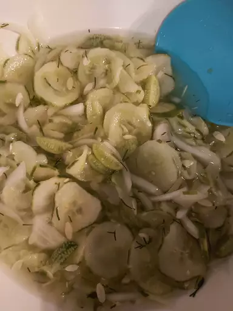

Cucumber Salad

Description
This cucumber salad is refreshing and delicious! A sweet vinegar
dressing is boiled, then poured over thinly sliced cucumbers to
ensure the best flavor. The salad can be served chilled or at room
temperature.
Ingredients
- 4 cucumbers, thinly sliced
- 1 small white onion, thinly sliced
- 1 cup white vinegar
- ¾ cup white sugar
- ½ cup water
- 1 tablespoon dried dill, or to taste
Steps
- Step 1: Gather all ingredients.
-
Step 2:
Combine vinegar, sugar, and water in a saucepan over medium-high
heat; bring to a boil; pour over cucumbers and onions in the
bowl. Stir in dill. Cover and let marinate in the refrigerator
for at least 1 hour before serving.